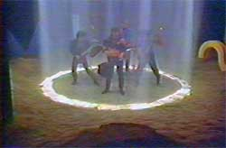
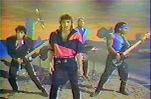

Audio Files
The Uranium Video
The 20+ year wait is over. I have for you here Zot's video for the song Uranium.
Recorded on November 12, 1984, the Uranium video made it into heavy rotation on MTV during the summer of 1985 for a short time.

When the video first came out I remember thinking that I was a bit ahead of the curve because I already had the Zot album. However, for the last two decades I'd been kicking myself for not taping a copy of this video. At the time I thought this song and this band would have a lot more staying power.
Thanks for this video go out to the family of the late Patrick Knowles who provided me with a copy. The video tape is 20 years old, but it has held up pretty well. The sound has a bit of static I couldn't remove, but it adds a bit of character. I've spent the last few months tweaking this video and encoding it over and over again to get it into shape.

Director: C.D. Taylor
Producer: Francie Moore
Executive Producer: Randy Phillips
Design Arts Productions
- Zot - "Uranium" video Windows Media .wmv 6.3MB
Posted by Bill at July 10, 2005
The Album - Zot

(all songs here are vbr mp3 files)
- Uranium (4:52)
- Someone (4:40)
- I Believe in Miracles (3:40)
- Little Bit Longer (2:33)
- Insanity (4:55)
- Something in My Heart (3:46)
- I Told You From the Start (3:54)
- Run for Cover (3:39)
- Bright Nights (4:50)
- We're on Your Side (3:41)
- Try (3:54)
Posted by Bill at November 18, 2002